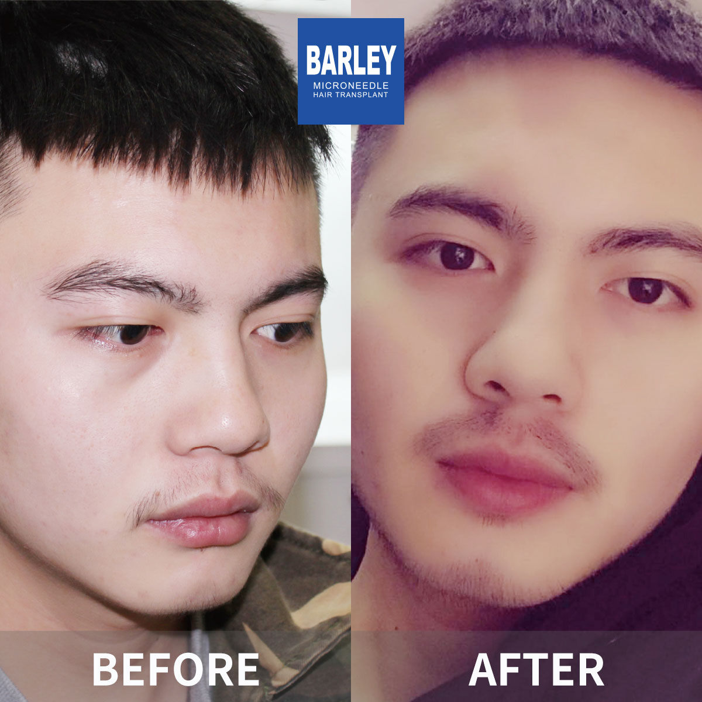
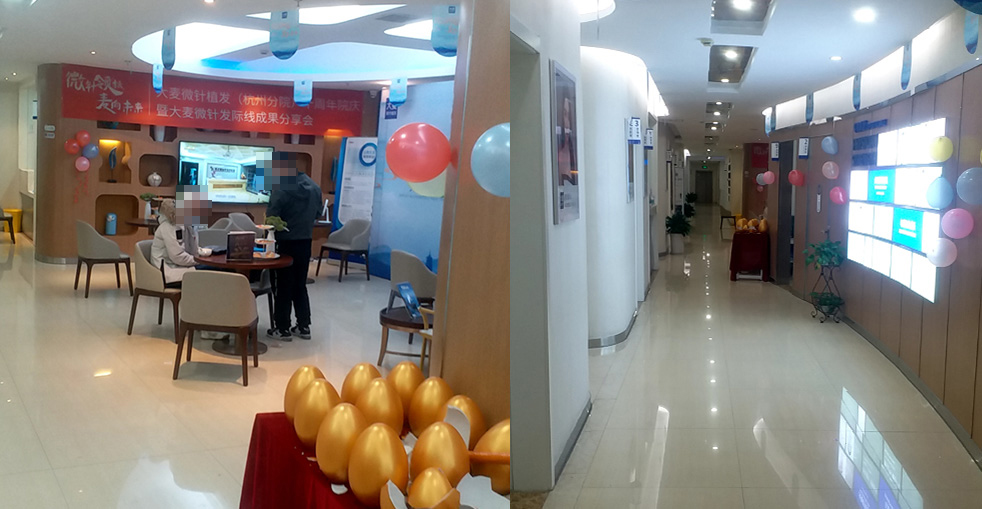

Beard restoration is a specialized surgical technique that corrects patchiness, thinness, or total absence of facial hair by harvesting healthy follicular units from a donor site — typically the back of your scalp — and implanting them into the face. The outcome is lifelong, natural-looking facial hair that you can shave, trim, and style however you like, because it truly is your own hair.
Many men are simply not blessed with the genetics needed for a thick, even beard. If you battle blank spots on your cheeks, a patchy mustache, barely-there sideburns, or an outright inability to grow facial hair, beard restoration provides a permanent fix. Because the transplanted hair is yours, it responds to razors, cycles through normal growth phases, and blends seamlessly with whatever facial hair already exists.
The secret to convincing results lies in replicating the complex growth angles unique to facial hair. Unlike hair on the head, beard hair sprouts at different angles depending on the zone of the face. Our surgical team uses refined techniques that faithfully recreate these natural growth patterns, so your restored beard looks as though it grew there on its own — never as though a surgeon put it there.
When genetics hand you facial hair in some spots but not others, our restoration work fills those gaps to produce a uniform, head-turning beard.
Some men simply cannot grow a beard no matter what they try. Our surgical approach creates the facial hair your DNA never provided — permanently.
Whether from accidents, surgeries, cystic acne, or burns, we transplant viable follicles directly into scarred skin to restore an unbroken, continuous beard.
Want higher cheek lines, a thicker goatee, or more defined sideburns? We refine and build upon your existing facial hair to match the exact style you have in mind.
Step 1 — Tailored Beard Blueprint: Before any work begins, we partner with you to map out your ideal beard shape. We draw the exact borders and contours right on your skin, making sure the finished product matches your vision. Whether you're after a full beard, goatee, Van Dyke, or something entirely your own, every detail is thoughtfully planned.
Step 2 — Strategic Follicle Harvesting: We handpick the strongest, most resilient follicles from your donor area. These units produce the thick, coarse hair that defines a truly masculine beard.
Step 3 — Directional Implantation Technique: Facial hair grows in multiple directions depending on the zone. The mustache grows downward, cheeks angle outward and slightly down, the chin grows straight down, and the neck grows upward. Our surgeons replicate every single one of these directional patterns with pinpoint accuracy.
Step 4 — Graduated Density Mapping: Grafts are placed at carefully calculated densities that mirror how real beards develop — denser around the mustache and chin, lighter across the cheeks. This graduated approach produces the unmistakable look of naturally grown facial hair.
End-to-end facial coverage from sideburns down to the neckline. Our most popular choice — creates a commanding, masculine presence with full cheeks, mustache, and chin.
Concentrated hair on the chin and upper lip with smoothly shaven cheeks. A sophisticated, distinguished look that calls for fewer grafts than a full beard.
A bold, sharply defined mustache for men who want facial hair confined to the upper lip. Typically calls for 400 to 800 grafts.
Sharpen your sideburns and carve out crisp, clean cheek lines for a refined, well-groomed look. Ideal for men seeking a subtle upgrade to their facial hair.
Most patients need between 2,000 and 4,000 grafts, depending on how dense you want the result and how much surface area must be covered across the cheeks, mustache, chin, and neck.
Generally requires 500 to 1,200 grafts to build out a complete chin and mustache area. A focused approach that delivers outsized visual impact.
Usually calls for 400 to 800 grafts to build a thick, well-outlined mustache. One of our most frequently requested procedures.
Typically falls between 300 and 800 grafts depending on the length and density you want. Delivers sharp, clearly outlined facial hair borders.
Our surgeons understand male facial proportions and create beard shapes that accentuate your jawline, balance your features, and reflect your personal style — giving you results you'll be proud to show off.
Our 0.6mm micro-instruments enable the most precise graft placement on the market, yielding natural-looking facial hair with less tissue trauma and faster recovery.
From your first message to your final follow-up, our international patient coordinators communicate fluently in English, making every step of your journey smooth and stress-free.
Personalized facial hair restoration powered by cutting-edge FUE techniques for results that look and feel completely real

A thick, well-defined beard projects confidence and masculinity — traits many men want but genetics don't always provide. Our beard restoration program gives you the full, even facial hair you've been dreaming about, and it's permanent. Using your own hair follicles, we build a beard that looks completely real, grows normally, takes to a razor, and blends perfectly with any existing facial hair you have.
Shaped to fit your unique face
Your real facial hair, forever
Treat it like real beard hair
Undetectable, seamless finish
Every step from your first consultation to your final, natural-looking beard
We sketch your ideal beard layout directly on your face for your review and sign-off
Strong, healthy follicles are extracted from the back of your scalp using FUE methodology
Every unit is carefully sorted and prepared to maximize implantation success in the facial area
Follicles are implanted at the exact natural growth angle required for each facial zone
We verify even density and symmetrical coverage across every treated area before finishing
Detailed post-procedure guidance plus 12 months of growth monitoring and support
The reasons men across the globe choose Barley for their facial hair transformation
Because the transplanted hair comes from your own body, it behaves exactly like genuine facial hair. Shave it clean, grow it out, trim it short, use beard oil, or shape it with a styler — the hair keeps growing continuously just like a natural beard and needs the same everyday upkeep. That's exactly what you deserve from a truly authentic result.
Facial hair growth is far more complicated than hair on your head. The mustache grows down, the cheeks angle outward, the chin hair points straight down, and the neck hair grows up. Our surgeons duplicate every one of these directional patterns, creating a beard that grows exactly the way it should — never looking obviously artificial.
We hand-select the sturdiest, most robust follicles from your donor area so your new beard carries the thick, coarse qualities that define real facial hair. This careful graft selection is what gives your restored beard its authentic masculine character and feel — right down to the touch.
Nearly two decades of proven skill with outcomes trusted by patients across the globe
Trailblazers in microneedle hair restoration technology since 2006
Consistent, high-quality care across every location in China's major cities
Exclusive microneedle and implant pen systems that deliver superior, repeatable results
Chosen by patients from every continent and corner of the earth
Dedicated English-speaking patient coordinators with you from first inquiry to full recovery
Modern facilities with strict sterilization and safety protocols upheld during every single procedure
See the remarkable before-and-after results our patients have achieved with beard restoration





Great moments captured with our satisfied patients

Pictured with our medical team after a successful procedure

Celebrating outstanding results with our surgical team

Another beaming patient sharing their satisfaction

Patient with our specialist just before heading home

Satisfied patient with Dr. Chen after finishing treatment

Excited patient showing off their refreshed appearance

Patient overjoyed with their full transformation

Patient starting fresh with remarkable results
Genuine reviews from our worldwide patient community
I was 29 and could barely grow anything on my cheeks — just random thin patches no matter how long I waited. Barley placed 1,800 grafts across my cheek and jaw areas. Ten months later, I finally have a real, connected beard for the first time in my life. The density is impressive and over 95% of the grafts took. I couldn't be happier with how it turned out.
My genetics gave me a beard with huge empty zones on both cheeks. The surgeon mapped out a full beard with clean cheek lines and blended everything together seamlessly. After 2,200 grafts, my beard grows in completely evenly. I can finally rock the full beard I've wanted since I was a teenager. The one-year results have blown past my expectations.
I burned my chin as a kid and it left a scar that always showed up as a bald gap in my beard. Barley placed 400 grafts right into the scarred tissue. I was told scar tissue usually means lower survival rates, but my results were perfect. Eight months in, that bare patch is completely gone and I can grow a goatee without any visible gaps.
The whole session took about 6 hours to place 2,000 grafts across my cheeks, chin, and mustache. I was worried about looking rough during recovery, but the tiny scabs were basically gone by day five. At four months, new beard hair started coming in beautifully, and now at eleven months it's thick, coarse, and looks 100% real. My mates still can't believe the difference!
I had a very specific beard style in mind — a connected full beard with a sharp neckline. The surgeon spent half an hour drawing the exact design on my face before the procedure even started. All 1,600 grafts were angled precisely to replicate natural downward growth. I can trim and shape it exactly how I want. From the first consultation to the final result, the whole process took about a year and was worth every single minute.
Growing up in East Asia, my genetics just didn't support much facial hair at all. Barley completely changed that by placing 2,400 grafts across my lower face. Since beard hair is naturally thicker than scalp hair, the coverage is incredible. Fourteen months later, I have a full, masculine beard that has totally transformed my look. The English-speaking staff made communication effortless throughout my entire trip from Seoul.
Take a look at our modern, welcoming facilities

Our cutting-edge treatment center

Relax in our premium lounge

Sterile and fully equipped with advanced technology

Private, expert-guided discussions

A relaxing space for post-procedure rest

A warm and friendly welcome
Detailed answers to every question you might have about facial hair reconstruction
Book your no-cost evaluation with our facial hair restoration specialists
15810155700
+86 13730143529
hairtransplant@qq.com